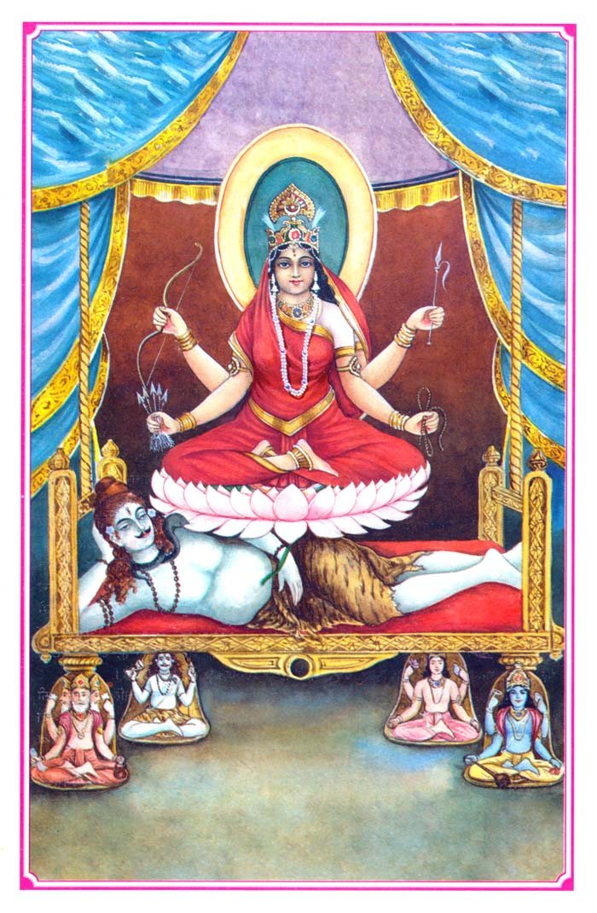
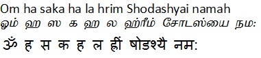
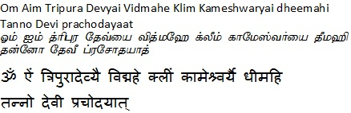

|
|||||
lordess sakthi
DASA MAHA VIDHYA
Tripurasundari(Sodashi)
|
 |
|
Tripura Sundari also known as Shodasi. She represents Godess Parvathi also known as Tantric Parvathi. According to description in her dhyana mantra, Her complexion shines with the light of the rising Sun. This rosy colour represents joy, compassion and illumination. She is shown with four arms in which she holds five arrows of flowers, a noose, a goad and a sugarcane as bow. The noose represents attachment, the goad represents repulsion, the sugarcane bow represents the mind and the arrows are the five sense objects. This is the story of Her manifestation. When Parvati left Her form as Kali and assumed the form of Gauri, Shiva addressed Her as Kali again and again. Parvati was insulted and left that place. Shiva went into His own heart and began to remember the Goddess. But without seeing the Goddess in person, He became dismayed and wondered where She had gone. At that time Narad Muni came to where Shiva was meditating. Shiva narrated this occurrence to Narad and told him that Kali had left Him. Narad was very happy to hear of the differences between Shiva and Kali. In his meditation Narad saw that Parvati was sitting in meditation on Sumeru Mountain in an inaccessible place. In order to increase the separation between Shiva and Parvati, Narad went to where Parvati was meditating and said that Shiva was entering into a relationship with another woman. It will be proper for you to stop Him. When the Goddess heard this from Narad’s mouth, She became filled with anger. In this great anger, the Goddess assumed the form of the most beautiful young lady of sixteen years, Sorasi, and presented Herself before Shiva. Seeing Her own shadow reflected upon Shiva’s chest, and thinking it to be another woman, She became even more angry, and said, “When we were married, You gave Your heart to me for my residence. How can you now give Your heart to another woman?” When Shiva heard Kali’s words, He replied, “Look closely at my heart. The woman you see in my heart is your reflection.” When the Goddess looked closely and meditated carefully, with great satisfaction She asked, “The woman that I just saw in your heart, by what name shall She be known?” Hearing Kali’s question, Shiva replied, “This new form of Yours is one of the Mahavidyas, and Her name will be Shodasi, She who manifests the sixteen. In this form you will manifest excellence!” Sorasi unites the sixteen syllables of Siva and Sakti, the Supreme Goddess of all Desires. |
|
Beeja Mantra  Gayatri  |